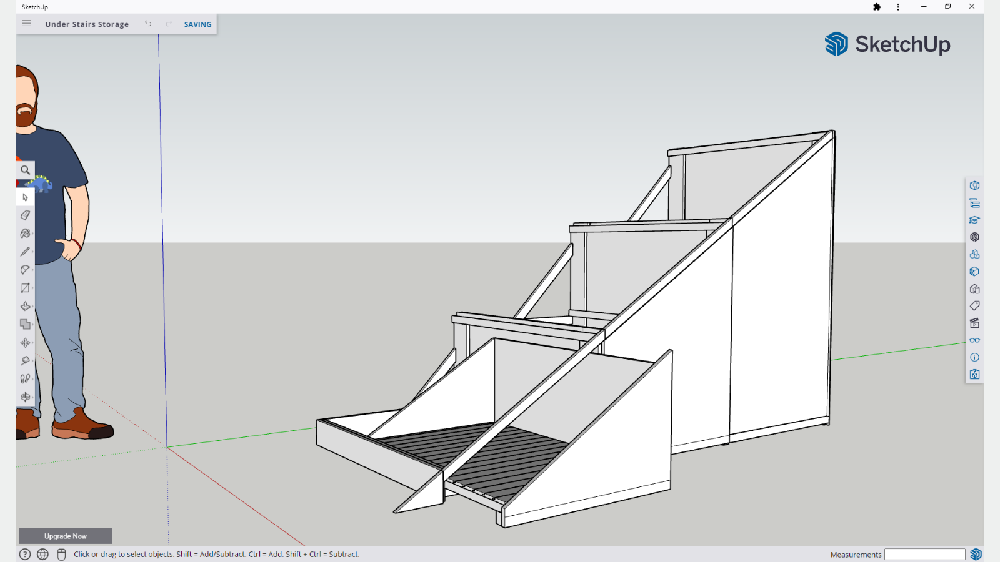
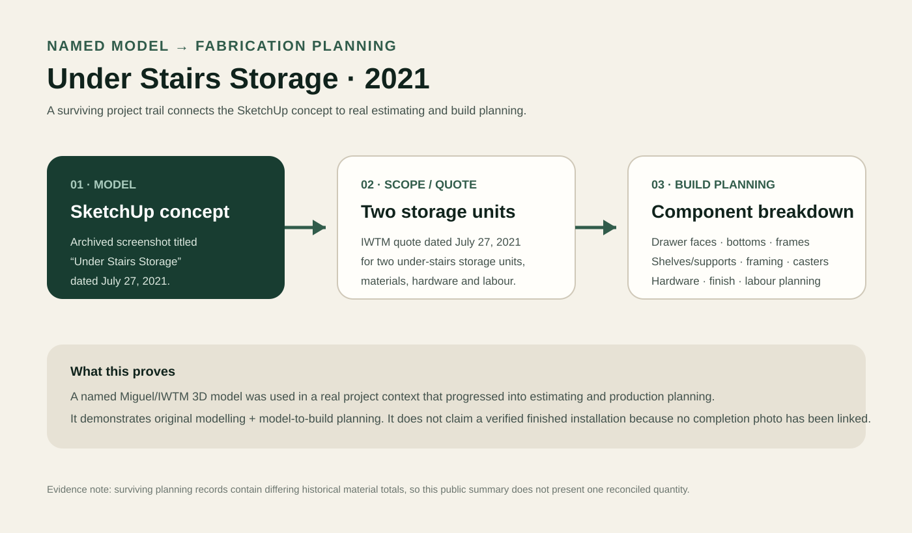
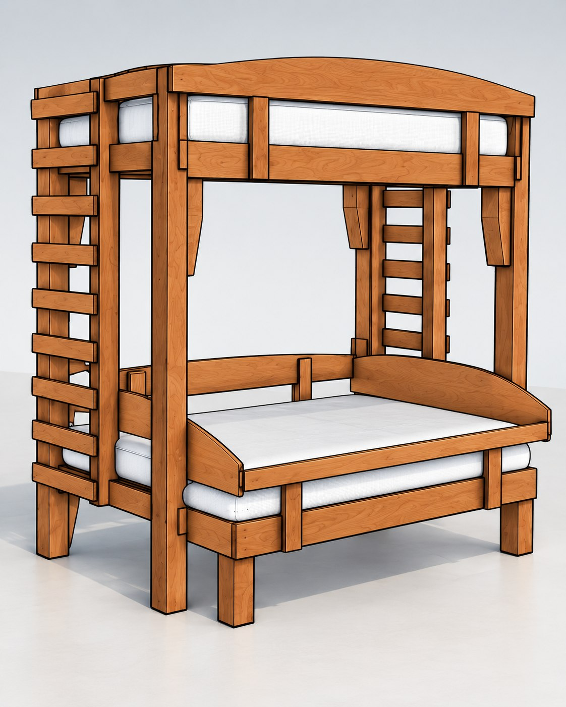
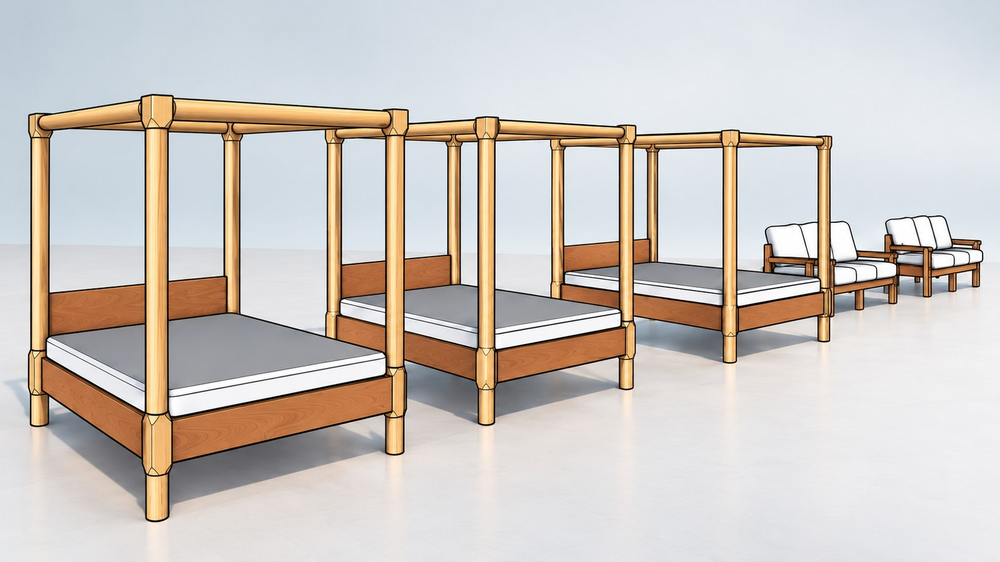
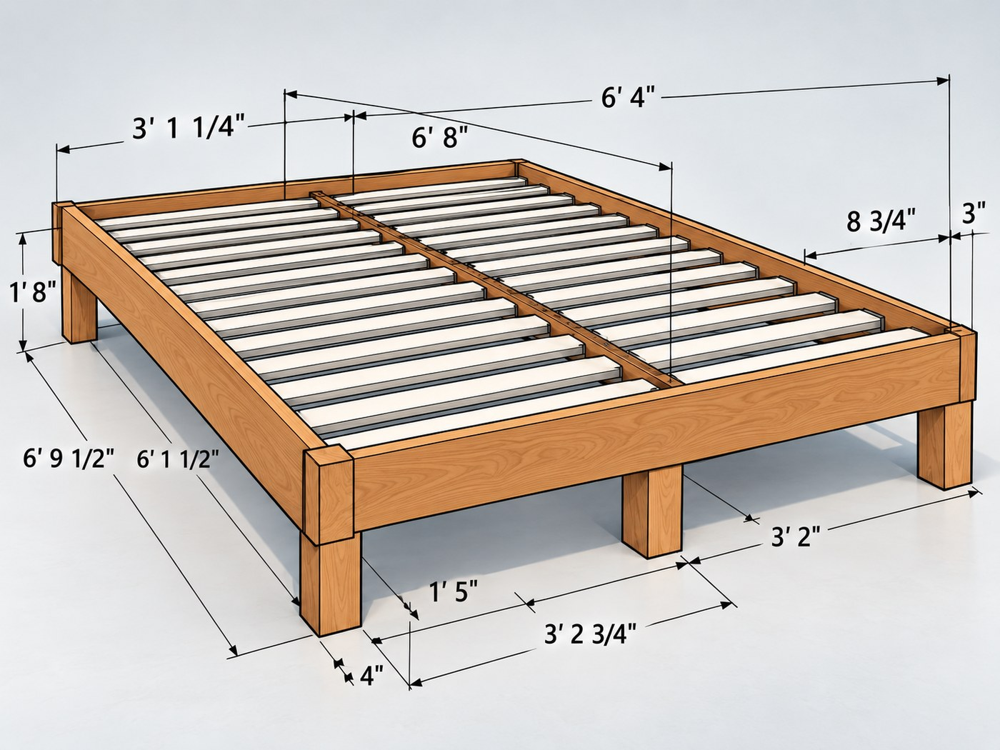
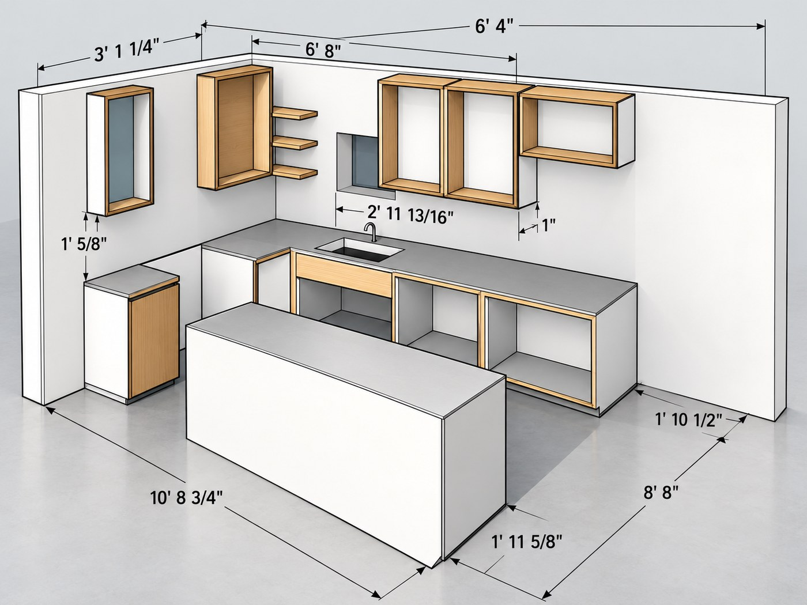

Design & Making
3D Design & Fabrication Planning
Using 3D models to turn physical ideas into clearer component, material and production decisions.

The problem
Use an awkward triangular volume without designing the fabrication blindly.
Under-stairs storage has a built-in constraint: every section changes height as it follows the stair profile. A useful concept therefore has to do more than look plausible. It needs to clarify the stepped geometry, usable storage zones, drawer/shelf structure and the amount of framing and hardware the build will require.
The surviving project trail connects the 3D concept to a real IWTM quotation for two under-stairs storage units and to a component-level planning sheet used to estimate materials, hardware and labour.

From model to planning
The value of the model was what it made possible next.
- Model the spatial problem: represent the changing stair profile and storage volumes in SketchUp.
- Break the design into buildable parts: drawer faces, bottoms and frames; shelving/supports; structural framing.
- Plan supporting hardware: casters, fasteners, handles and finishing consumables appear in the surviving project breakdown.
- Estimate production: the same project records include material, labour and work-time planning rather than stopping at a presentation image.
- Quote the scoped work: an IWTM quote dated July 27, 2021 describes two Under Stairs Storage Units and ties the design exercise to a real commercial project.
What this proves
Original 3D work connected to a real fabrication-planning workflow.
This is stronger evidence than a gallery of attractive models alone because the model has a named project context and surviving operational records around it. It shows how I use 3D modelling as a bridge between an idea and the practical questions of components, materials, hardware, labour and quoting.
The surviving project trail is strongest as a model-to-planning case, connecting the concept directly to estimating and production preparation.
Broader modelling work
Other archived models show the range of the same spatial-design practice.
These additional views demonstrate furniture and layout modelling across different forms.




Paired proof
3D planning and physical delivery are shown separately where the evidence is strongest.
The Modular Platform Bed case study provides the stronger evidence for fabrication, client-requested adaptation, transport and installed physical outcome. This Under Stairs case provides the cleaner surviving evidence for original 3D modelling tied to production planning.
I keep those proof chains separate instead of implying that one archive proves more than it does.